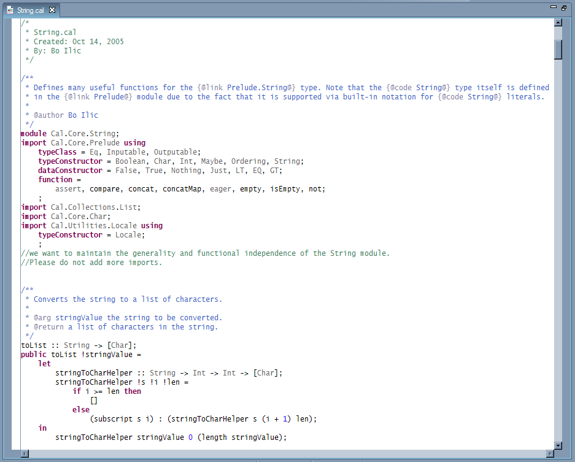

|  |
The CAL Editor has many of the features found in the Java Editor, such as bookmarks, copy/cut/paste, undo/redo and local file history.
As you can see in the screen shot above, the CAL editor provides syntax coloring to identify comments, Caldoc comments, keywords, literals and type names. The font and color applied to these elements can be configured in the preference page at CAL > Editor > Syntax Coloring.
The editor automatically indents each line appropriately as you type and highlights matching brackets.
If the CAL Builder is enabled, the module is rebuilt as soon as you save the file. Compilation errors are indicated by a marker in the left margin.
The context menu provides the following commands:
Goes to the declaration of the selected identifier. This work for foreign function as well so you can traverse to the Java code.
Adds // to the beginning of each selected line – or removes them if present
Surrounds the selected text with a block comment, delimited by /* and */
Removes a block comment surrounding the selected text
Adjusts the indentation of the selected lines to match the CAL standard
Adds or removes imported CAL modules, types, functions etc. as needed
Insert type declarations for the functions in the selected range if they are missing type declarations.
Renames a CAL entity, updating the definition and all references